Theater transition stagecraft and stop motion animation terms to help
Hermes Agent write FLF2VA prompts
Ask a video model to get from one room to another and it dissolves. A stage has to do the
same job in front of a live audience and it never gets to cut. So I gave the agent a
stagecraft manual instead of a prompt guide. It read the six photographs itself and wrote
all twelve prompts.
Photographs by Lori Nix & Kathleen Gerber, used as a study. MiniMax-H3 on a local RTX 5090.
Master
60.67 s4K, 24 fps
Passes
126 pairs, both directions
Render
1920×1088124 frames, 5.17 s each
Machine
RTX 5090ComfyUI, 25 steps
Six rooms in a closed loop, run forward and then backwards. Upscaled with Topaz, cut in Premiere.
01The agent looks at the picture first
Gemini 3.7 Flash has native vision, so the jpg itself goes to the model. It opens the
actual file and inspects the pixels. There's no caption sitting in between, and I never
describe the room to it.
Before any prompt exists, it writes one image card per still. Camera
height, where the horizon sits, what the floor is made of, the palette, and every object
in the frame with the grid cell it occupies. Then a second pass checks the card back
against the image and stamps gate1_status. A card that fails the check
doesn't get used.
// what it wrote back, abridged"scene_name": "Abandoned Rustic Bar / Pool Hall",
"camera_height": "eye-level",
"horizon_visible": "horizontal tavern room
perspective looking across pool table
toward bar",
"ground_plane": "dusty distressed wood-plank
flooring scattered with trash and bottles",
"palette": [
"felt green (pool table surface)",
"deep vinyl red (booth upholstery)",
"exposed red brick (right wall)" ],
"subjects": [ {
"literal_object": "worn green-felt pool
table with billiard balls and cue stick",
"grid_cell": "bottom-center, middle-center",
"pose": "positioned diagonally in the
foreground on wood-plank floor" } ],
"props": [ {
"literal_object": "mounted taxidermy heads
(deer, ram, duck, fish)",
"grid_cell": "top-left and upper wall" } ],
"burned_in_text": "none, labels degraded at scale",
"gate1_status": "passed"
Nobody told it there was a pinball machine. Read the pair 01 prompt in section 06 and
almost every noun in it came off this card. Green felt, red vinyl booth, taxidermy heads,
barstools, the pinball machine. All six cards are in the downloads.
02What the agent was told
Two things. First, stagecraft. A scene change on a stage is heavy engineering on a
schedule, so I told it to pick one real piece of stage machinery per cut and make the
pixels obey it.
WagonA set slides through frame in a straight line at constant speed. Every pair in this run used it.
Shifters in viewA hand or a figure already in the shot moves the set by hand. The most believable one, because the labour is visible.
Reveal by occlusionSomething crosses close to the lens and clears onto the new room. The honest workhorse when two rooms have nothing in common.
Second, stop-motion. Nothing moves as a group. Every billiard ball, every laundry cart,
every hair dryer gets animated separately, and each one makes its own sound. These are the
terms the spec uses for that, and they all end up in the sidecar log.
Micro-prop animationEach small object is choreographed on its own, in ratchet increments, never as a group.
persists_50The named object that has to be sharp and solid at the halfway frame. The hardest field to fill and the one that carries everything.
Hold / move / arrive / lockThe beat sheet. Four spans of the clip, written before any prose gets written.
Then three hard rules. Never a full-frame dissolve, so something from
the outgoing room has to stay sharp the whole way through, sitting where physics says it
should be. One device per pair. And before writing a word, name the object that's still
standing there at the halfway mark. If you can't name it, the plan is a dissolve and the
render will prove it.
03The six rooms
Photographs by Lori Nix and Kathleen Gerber. They build these rooms by
hand on a table in their Brooklyn apartment out of foam board, plaster, wire and
scavenged parts. Seven to fifteen months a set, then shot on an 8×10 view camera. I
cropped six of them to 16:9 and used them as anchor frames.
Five from The City,
one from Unnatural History.
Shown at 800 px. Go to lorinix.net for the real thing.
Bar
Green felt, red booth, trophy heads.
Beauty Shop
Chrome hood dryers, red chairs, ivy.
Chinese Take-Out
Lit menu boards, a scooter parked indoors.
Vacuum Showroom
Canister vacuums, plants pushing in.
Laundromat at Night
A wall of portholes, blue city outside.
Lions & Tigers
Monochrome, plaster casts mid-build.
04Three of the six joins
Forward passes, MiniMax-H3. First frame, midpoint, last frame. The midpoint is the whole
test, because that's where a dissolve shows up as mush.
Bar → Beauty Shop
Wagon. The left booth and the trophy wall hold.
0%
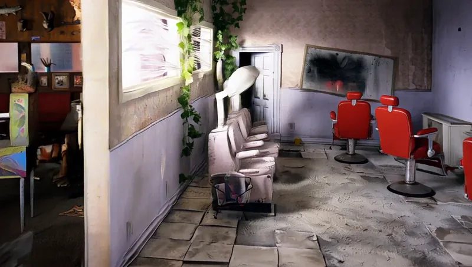
50%
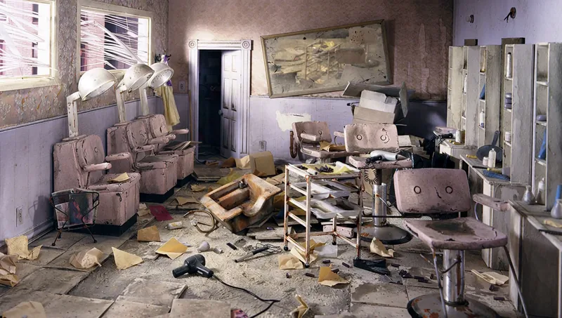
100%
Clean, and faster than I wanted. A pale wall panel crosses the left third and the room
behind it is already the salon. Nothing mushes, but the machine's done by halfway and
the rest is just the salon settling.
Chinese Take-Out → Vacuum Showroom
Wagon. Nothing holds, because these two rooms share no object.
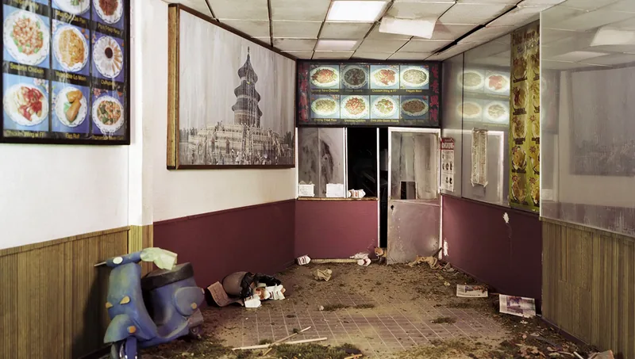
0%
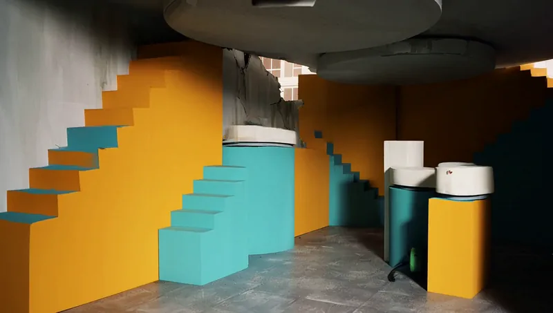
50%
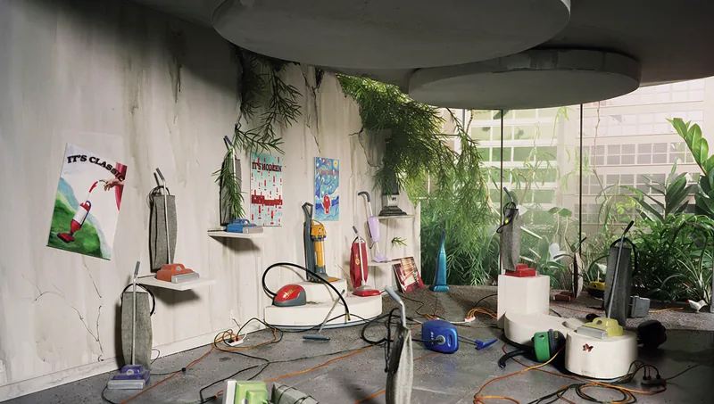
100%
This one went somewhere else. The prompt asked for mustard and turquoise display
plinths sliding forward. At the midpoint the model built a mustard and turquoise
staircase in an empty grey room. It's sharp and it's solid, so it didn't
dissolve, but it isn't either of my rooms. The two sets share nothing, so there was
nothing honest to name at 50%, and it filled the gap with the only thing it had. The
colours.
Vacuum Showroom → Laundromat at Night
Wagon, with the day-to-night grade riding under it.
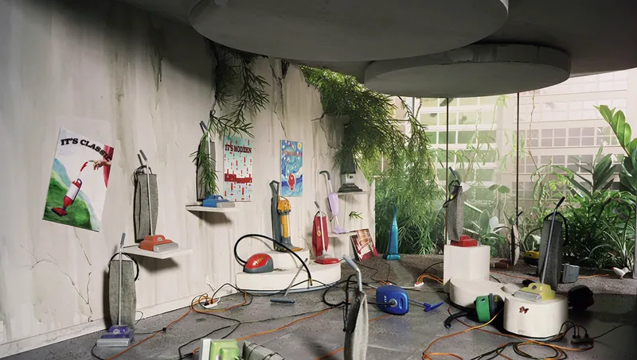
0%
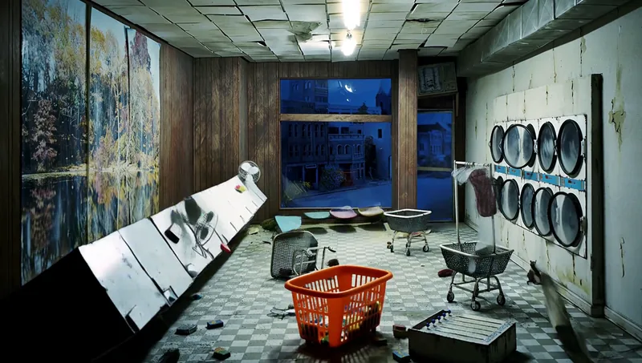
50%
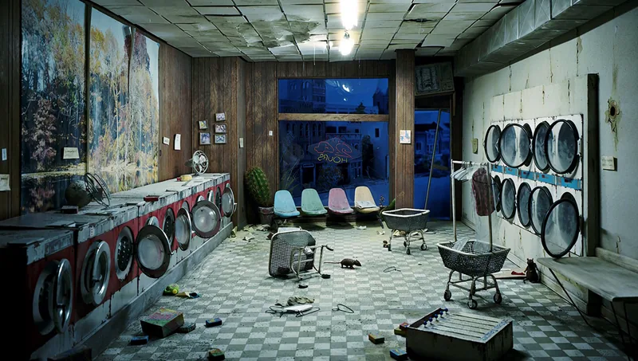
100%
My favourite frame in the run. At the midpoint the bank of washing machines is
lying over at thirty degrees, hinged at the floor, halfway through being stood up.
That's a flat being walked into place. I never wrote hinge or flat anywhere in the
prompt. It only said the bank tracks forward with a metallic rumble.
05LTX-2.5 against MiniMax-H3
Same pair, same prompt, same GPU. Only the model changed. Not the result I expected.
Bar → Beauty Shop
LTX-2.5 60 s per pass
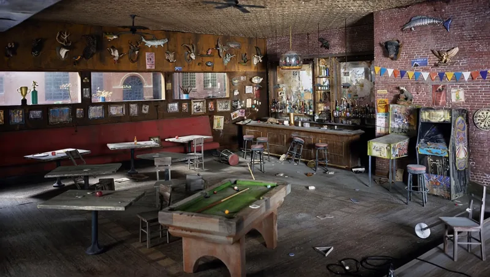
0%
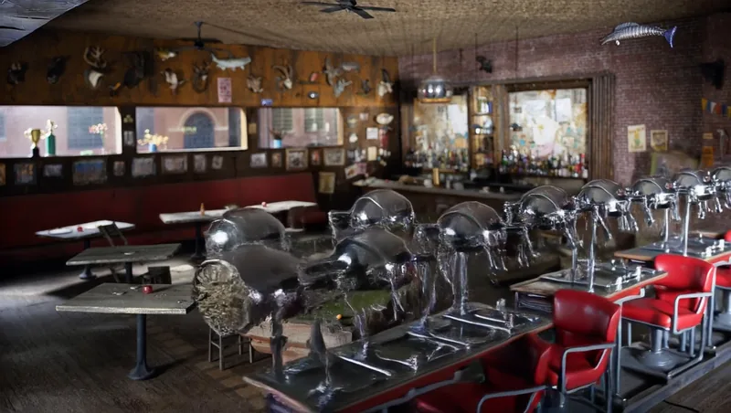
50%
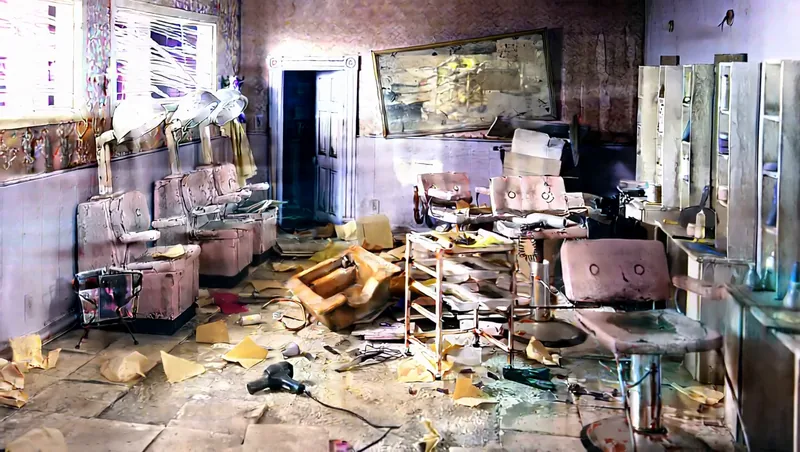
100%
MiniMax-H3 450 s per pass, 7.5× the cost
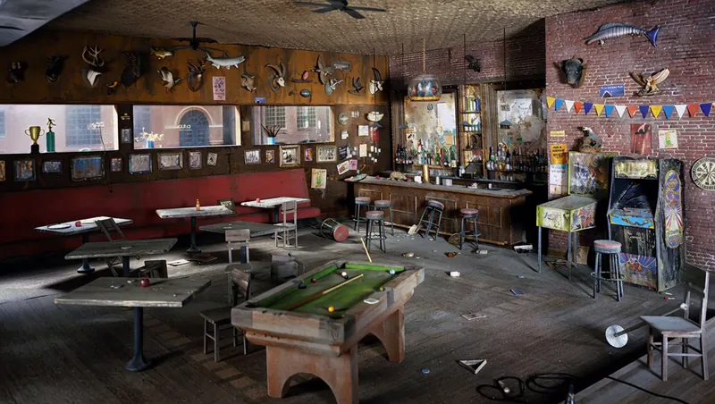
0%
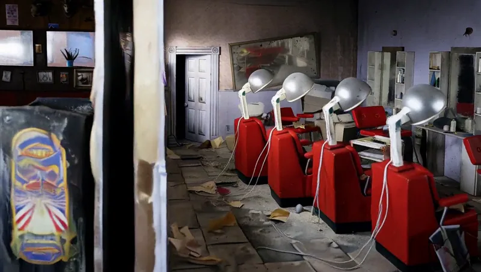
50%100%
LTX does the thing the spec is actually asking for. At the midpoint the chrome dryers
and red salon chairs are standing on the bar floor, under the bar's own wood
ceiling, with the trophy wall untouched. Two rooms in one space. MiniMax holds the bar,
crosses a dark panel, and it's already in the salon.
What I took from it
LTX gives you the better middle and it will lie to you. When two rooms share a floor and an eyeline, it puts both on screen at once, which is the strongest thing this kind of model can do. When they've got nothing in common, it invents a third room and sits there.
MiniMax rarely invents, and it rarely transitions either. It treats the job as an arrival. Hold, cross one edge, land, wait.
The 7.5× render time buys reliability. It doesn't buy motion. 60 s a pass against 450 s, same GPU, same prompt.
The final twelve ran on MiniMax because a closed loop has to survive twelve joins, and one invented room breaks the whole reel. For a single hero shot I'd run LTX and take the re-rolls.
06The prompts, as submitted
The agent wrote these, I didn't. No device names, no theatre words, nothing abstract in
them. Every clause names an object and gives it a direction and a sound. The model
renders the audio from that last line.
Bar → Beauty Shop
integrated_multimodal_description: [Shot 1] Live-action, hand-crafted stop-motion miniature diorama, continuous single shot, no cuts. The camera holds a steady eye-level view. The scene opens on Picture 1. In energetic, rapid stop-motion increments, the wooden billiard balls roll fast across the green felt, loudly dropping and thudding into the leather drop pockets. The wooden cue stick slides briskly off the rail with a sharp scrape, while the pool table rattles on floor casters as it glides out to the left. The vintage pinball machine and arcade cabinet rumble and clatter across the floorboards as they roll out to the right. Round vinyl barstools loudly spin on swivel stems, squeaking in quick rotation, while liquor bottles and glassware clink, rattle, and slide off tiered shelves as the heavy wooden bar counter tracks away. From the right, vintage chrome hooded hair dryers on slender stands roll into the room with metallic clicks and rattling tripod casters. Red vinyl salon styling chairs swivel in rapid increments with loud hydraulic squeaks, sliding forward into place before mirrored vanity counters. Rectangular vanity mirrors slide down with sharp wooden taps along the plaster walls, and scattered plastic hair curlers and glass shards jitter across the floor. Peeling floral wallpaper and creeping green ivy vines settle into place, locking every miniature prop firmly into the exact layout, lighting, and composition of Picture 2.
overall_soundscape: Loud stop-motion ratchet clicks, wooden billiard balls violently clacking and thudding into leather pockets, small metal caster rattles, loud squeaking vinyl chair swivels, metallic chrome clicks, glass bottles clinking and rattling, cue stick sliding scrape.
Chinese Take-Out → Vacuum Showroom
integrated_multimodal_description: [Shot 1] Live-action, hand-crafted stop-motion miniature diorama, continuous single shot, no cuts. The camera holds a steady eye-level view. The scene opens on Picture 1. In energetic, rapid stop-motion increments, the blue Vespa scooter rolls away to the left with small tire squeaks, the order counter and glass partition slide backward with mechanical track rattles, and framed menu placards lift off the walls with wooden clicks. Folded paper takeout cartons and crumpled newspapers rustle and sweep cleanly across the floor. From the background and sides, tiered geometric concrete display plinths painted mustard yellow and turquoise slide forward with heavy grinding scrapes across the cracked floor slabs. Individual vintage canister and upright vacuum cleaners with chrome handles and ribbed hoses roll and pivot onto the risers in sharp stop-motion steps, trailing ribbed plastic hoses with rattling clicks. Large plate-glass showroom windows settle into the background framing brick city facades outside, and wild green grass and vines push through concrete cracks, locking every miniature prop firmly into the exact layout, lighting, and composition of Picture 2.
overall_soundscape: Small rubber wheel roll and squeak, crisp paper carton rustle, heavy concrete plinth grinding scrape, vintage chrome vacuum handle clicks, ribbed plastic hose rattle and dragging clatter.
Vacuum Showroom → Laundromat at Night
integrated_multimodal_description: [Shot 1] Live-action, hand-crafted stop-motion miniature diorama, continuous single shot, no cuts. The camera holds a steady eye-level view. The scene opens on Picture 1. In energetic, rapid stop-motion increments, vintage canister and upright vacuum cleaners pivot on small plastic wheels with sharp clatters and glide off-screen, trailing ribbed hoses. The tiered yellow and turquoise display risers slide backward and separate with heavy grinding friction. The daytime city skyline outside the plate-glass windows deepens into nocturnal dark blue shadows. Along the left wall, a fixed bank of commercial front-loading washing machines with round glass portholes tracks forward with a loud metallic rumble. A bright orange plastic laundry basket rolls forward on tiny plastic wheels with a loud rattle into the center foreground across moss-covered floor tiles, and fluorescent light fixtures dangle from the deteriorating ceiling grid with light metallic clinks, locking every miniature prop firmly into the exact layout, lighting, and composition of Picture 2.
overall_soundscape: Small plastic wheel rolls and rattles on concrete, chrome appliance clicks, heavy washing machine cabinet metallic rumble, metallic ceiling grid clink, quiet nocturnal room hum.
07Download the files
The two ComfyUI graphs the run used, the image cards the vision model wrote, and all
twelve prompts in one text file. Take them and change what you like.
Both graphs are saved in ComfyUI's API format, so load them with
Workflow → Open (API Format) or post them straight to /prompt. Regular
drag and drop onto the canvas won't read them. You'll need the model files listed in the
loader nodes, and the two LoadImage nodes still point at whatever test stills were sitting
in the input folder, so set your own first and last frame before you queue anything.
08The stack
ReadNative vision on the source jpg, one image card per still, checked back against the image before use. Section 01. Gemini 3.7 Flash on the final run, DeepSeek-V4-Flash via Nous on earlier passes of the same spec.
PlanClassify the pair, pick one device, name the constant and the object that holds at 50%, split the clip into hold / move / arrive / lock.
WriteOne paragraph, present tense, camera-observable only. Theatre words get stripped before anything is queued.
RenderComfyUI, MiniMax-H3 FL2VA, 25 steps, 1920×1088, 124 frames at 24 fps, local RTX 5090. Twelve passes.
CheckFrames pulled at 0 / 25 / 50 / 75 / 100 percent of every pass and eyeballed. A sidecar .txt lands beside every clip with the prompt, the device and the ffprobe output.
FinishTopaz Precise Starlight 2.6 to 4K, cut in Premiere with three-frame handles, native Foley under two archive tracks.
Next time
Order the loop so every neighbouring pair shares an object, and reject any pair where nothing can honestly be named at 50%. Both failures came from that.
Give the move a duration in seconds. Nothing in the prompt says how long it should take, so the model finishes early and parks.
Colour arrives after geometry every time. Grade the two anchors closer before rendering.